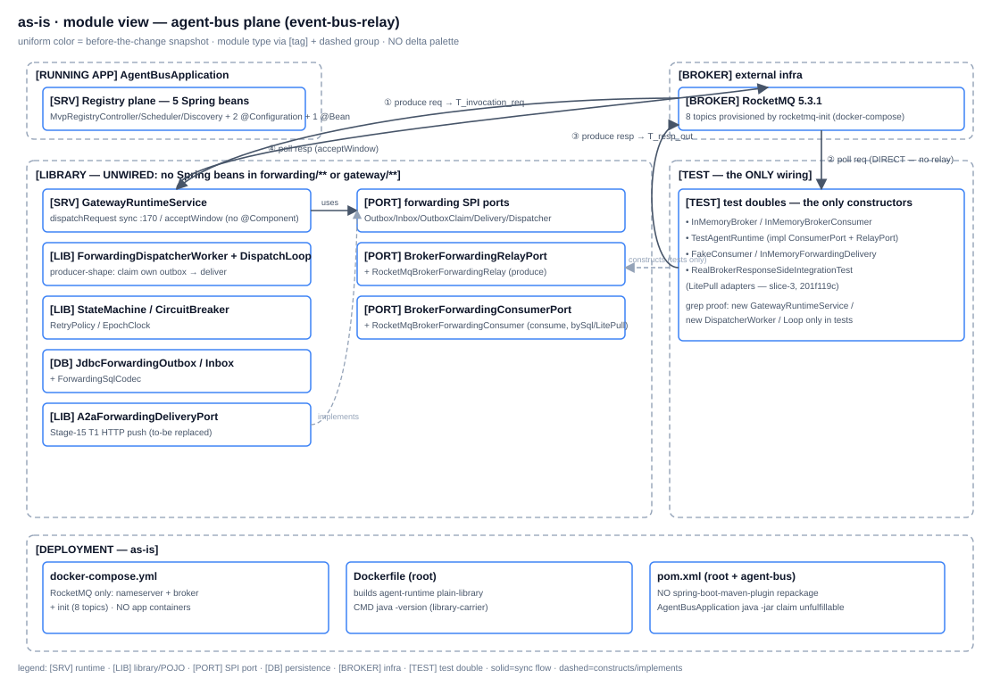
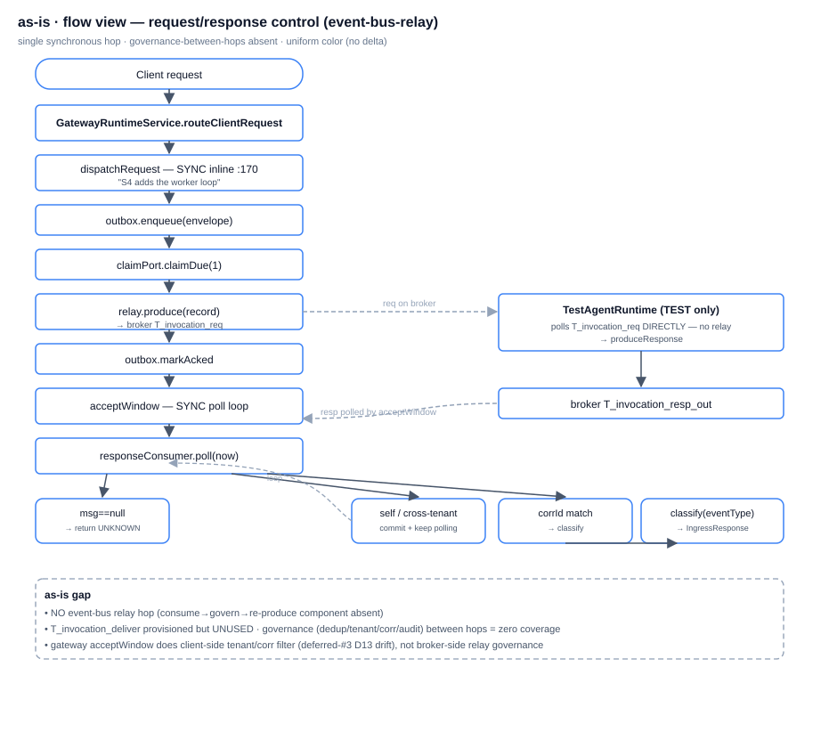
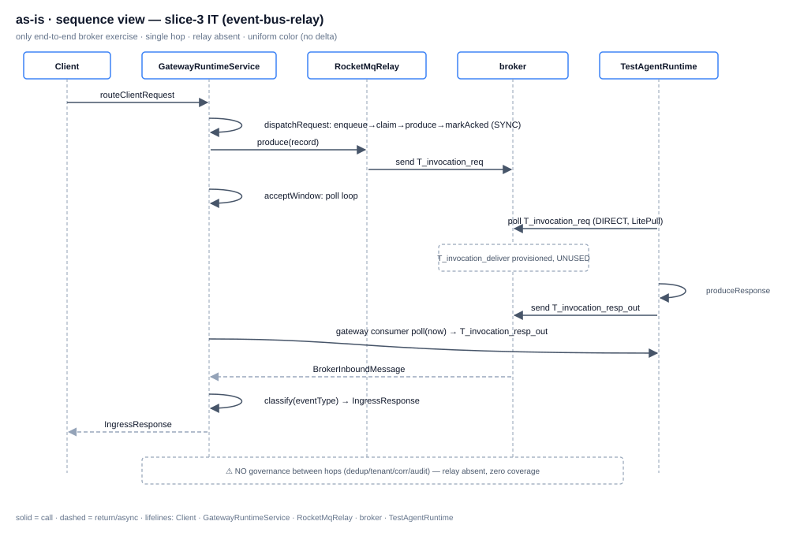
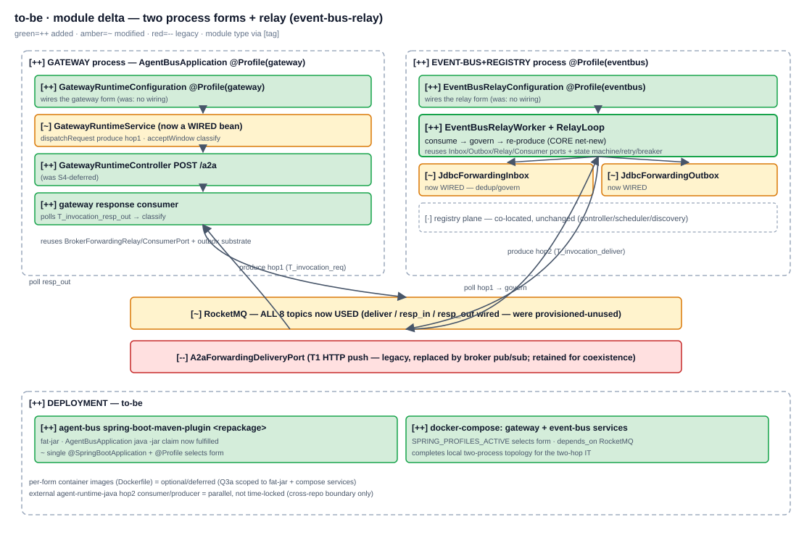
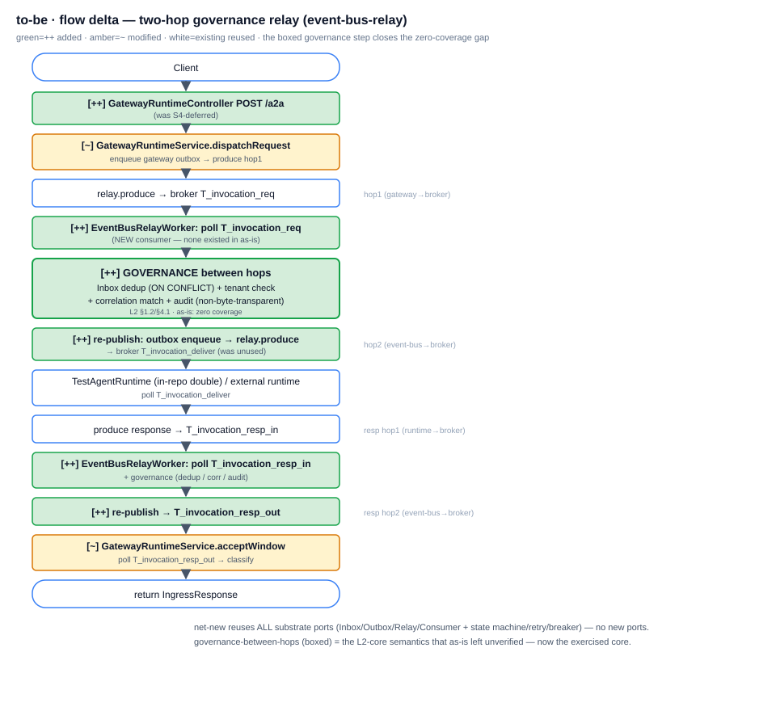
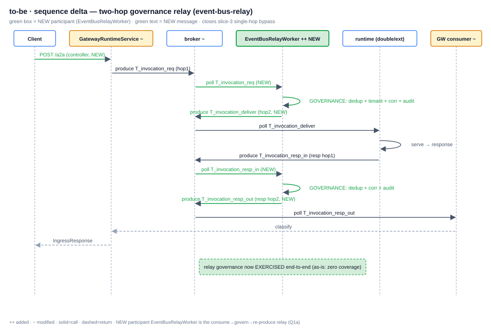

G2 · as-is
Single
AgentBusApplication boots only the registry plane; the entire gateway+forwarding+broker substrate is unwired library code exercised solely by tests. dispatchRequest produces inline (sync). No consume→govern→re-produce relay. No repackage; docker-compose = RocketMQ-only.module

flow

sequence

G4 · to-be (delta)
Two process forms via Spring profiles (Q2a). ++ EventBusRelayWorker (consume→govern→re-produce, reusing all substrate ports — Q1a). Governance-between-hops exercised (Q4a in-repo double). ++ spring-boot repackage + compose gateway/event-bus services (Q3a).
T_invocation_deliver/resp_in/resp_out wired. -- A2aForwardingDeliveryPort legacy.module delta

flow delta

sequence delta

G6 · as-built (pending implement)
Redrawn from real code after G5 implement; diffed vs to-be. Placeholder until sign-off → implement.
module
as-built module — G6
flow
as-built flow — G6
sequence
as-built sequence — G6
Planned file changes (G4 → G5 implement scope)
| Δ | Path | What |
|---|---|---|
| ++ | agent-bus/.../forwarding/runtime/relay/EventBusRelayWorker.java | consume→govern→re-produce relay; reuses Inbox/Outbox/Relay/Consumer ports + state machine/retry/breaker (Q1a) |
| ++ | agent-bus/.../gateway/runtime/GatewayRuntimeConfiguration.java | @Profile(gateway) — wires GatewayRuntimeService + controller + response consumer |
| ++ | agent-bus/.../gateway/runtime/GatewayRuntimeController.java | POST /a2a (was S4-deferred) |
| ++ | agent-bus/.../forwarding/runtime/config/EventBusRelayConfiguration.java | @Profile(eventbus) — wires relay worker + JDBC inbox/outbox + registry |
| ++ | agent-bus/src/test/.../RealBrokerTwoHopRelayIntegrationTest.java | two-hop IT (in-repo TestAgentRuntime double; env-guarded) — nails governance semantics (Q4a) |
| ++ | agent-bus/pom.xml | spring-boot-maven-plugin <repackage> execution (fat-jar) (Q3a) |
| ++ | docker-compose.yml | gateway + event-bus services (SPRING_PROFILES_ACTIVE; depends_on RocketMQ) |
| ~ | agent-bus/.../AgentBusApplication.java | single main unchanged; profiles select form (Q2a) — java -jar now works |
| ~ | agent-bus/.../gateway/runtime/GatewayRuntimeService.java | becomes a wired bean; dispatchRequest hop1 produce path |
| -- | agent-bus/.../transport/a2a/A2aForwardingDeliveryPort.java | legacy T1 HTTP; replaced by broker pub/sub (retained for coexistence, not deleted) |
G3 decision tree — as-built landed
| Q | Chosen branch | Why (one line) | as-built landed |
|---|---|---|---|
| Q1 relay assembly | (a) new EventBusRelayWorker from existing ports | existing worker is producer-shape (claim outbox→deliver); relay needs consume→govern→re-produce; reuse all substrate ports | TBD (G6) |
| Q2 process split | (a) Spring @Profile on single AgentBusApplication | minimal diff over ADR-0160 single main; idiomatic two-forms-from-one-codebase; env-var selects form | TBD (G6) |
| Q3 deployment artifacts | (a) spring-boot repackage + compose services | repackage is prereq for any java -jar; compose completes local two-process topology for the IT; per-form images deferred | TBD (G6) |
| Q4 two-hop IT | (a) in-repo TestAgentRuntime double, env-guarded | matches REQ-2026-001 release bar (in-repo double, external runtime parallel/not time-locked); closes zero-coverage gap | TBD (G6) |
| G3.5 UI prototype | skipped | pure backend/runtime/deployment topology — no frontend template delta | n/a |
G6 diff vs to-be (pending implement)
| Matched ✓ | Drifted ⚠ | Missing ✗ | Surprise ⚠⚠ |
|---|---|---|---|
| TBD | TBD | TBD | TBD |
Implement scope (post sign-off) per handoff §3.4 sub-steps ②-⑥: assemble two-hop relay loop + symmetric response path → process split (Spring profile) → deployment artifacts (repackage + compose) → two-hop IT → coordinate external agent-runtime-java hop2. Not a REQ-2026-001 release blocker (release bar = InMemoryBroker CI gate + real RocketMQ env-guarded + TestAgentRuntime E2E; none require an independent relay process).